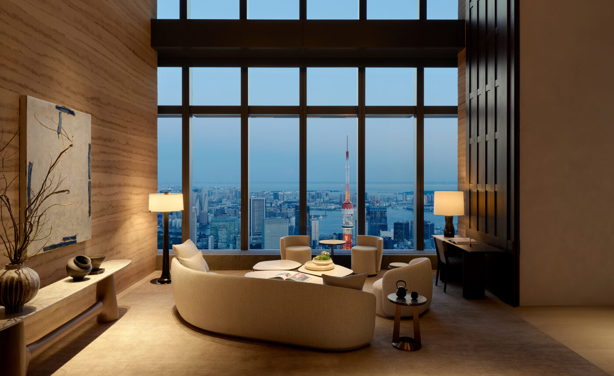
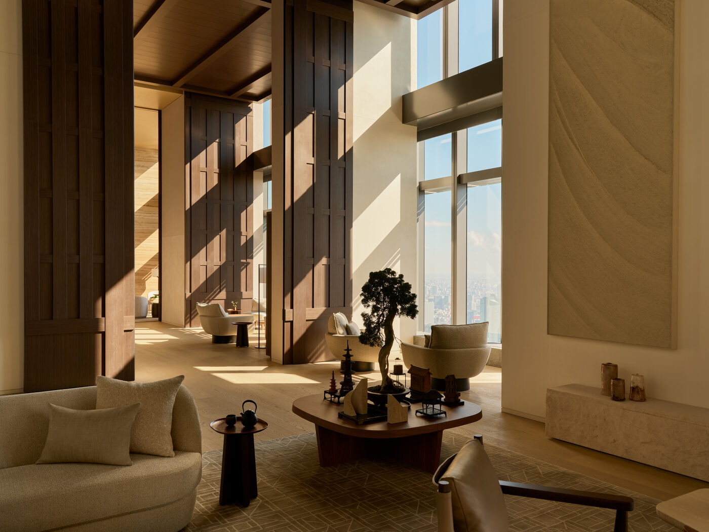

What happens to Tokyo when the schedule allows for a morning walk. The Aman’s relationship with silence. A ramen shop in Ginza that doesn’t care who you are. The city between the shows, which is the city at its best.
Tokyo fashion week — Amazon Fashion Week Tokyo, as it has been officially called since 2016, which is a sponsorship situation that everyone has silently agreed to treat as infrastructure — happens in Shibuya and Omotesando and several other parts of a city that has no interest in making things easier than they need to be. The shows are good. Some of them are very good. The city, however, is the reason to come.
The city between the shows is a different proposition from the city during them. It is available for approximately forty minutes in the morning, before the first show, and for a variable period in the evening, after the last one. These windows are sufficient. Tokyo, unlike Paris or Milan, does not require extended time to be understood. It requires attention.

The view — Mount Fuji from the upper floors of Otemachi Tower
Tokyo does not require extended time to be understood. It requires attention. The city between the shows rewards both.
The Splendid Edit — Issue No. 01, TokyoThe morning walk from the Aman
The Aman Tokyo is at Otemachi, which is the financial district, which is also adjacent to the Imperial Palace gardens, which is the correct place to begin a morning walk in Tokyo. The route from the hotel to the gardens takes four minutes if you do not stop to look at anything, and considerably longer if you do. The gardens themselves are not spectacular in the way that a Japanese garden in a travel magazine is spectacular. They are calm in a way that central Tokyo is not calm elsewhere, and the trees, in early March, are just beginning to do what they will fully accomplish in April.

Arva — Italian dining at Aman Tokyo, Otemachi
From the gardens, east on Hibiya-dori toward Ginza. The walk takes twenty minutes and passes through the architectural history of the Showa period in concentrated form: department stores and office buildings that were the height of ambition in 1960 and have since become something else, something that Tokyo does not have a word for but that architectural historians might call patina.
Ginza
The ramen shop is on a side street off Chuo-dori, three blocks from the Ginza Six. It has been there since 1973 and does not appear in any list of Tokyo’s best ramen shops, which is the correct qualification. It seats eight people at a counter and has been cooking the same tonkotsu broth since before most of the people eating here were born. The shop does not care who you are. This is the primary recommendation.
Ginza in the morning — before the department stores open, before the afternoon crowds that constitute one of the most concentrated displays of commercial intent anywhere in the world — is a version of the neighbourhood that the neighbourhood itself seems reluctant to acknowledge. The streets are wide and the light in March is low and the city, at eight in the morning, is already fully itself.
The Aman’s relationship with silence
The Aman Tokyo does something that very few hotels in any city do: it creates conditions for silence without demanding that you be silent. The lobby, which faces the Imperial Palace gardens and is designed around the vertical relationship between the high ceiling and the low furniture, produces a quality of quiet that is different from the quiet of emptiness. It is the quiet of a room that has been designed to absorb the city rather than exclude it.
By the time you return from the morning walk, from Ginza and the tonkotsu ramen and the low March light off the Chuo-dori department store facades, the lobby is still quiet. The elevator to the upper floors is still quiet. The room, with its Japanese stone bath and its floor-to-ceiling window and the city below it, is still quiet. This is what Tokyo between the shows offers, if you are staying in the right place.
A guide to Tokyo fashion week venues, hotels, and city essentials will appear in The Splendid Edit Issue No. 03. The Aman Tokyo: aman.com.
Tokyo — Photography courtesy Aman Resorts